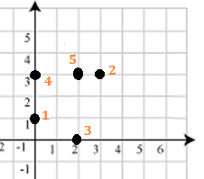

Nền nhà của bạn bị dính N vết bẩn. Giả sử nền nhà là mặt phẳng thì tọa độ của N vết bẩn lần lượt là (x1, y1), (x2, y2),..., (xN, yN). Bạn quyết định mua một tấm lụa để che đi các vết bẩn này, tấm lụa có hình chữ nhật và có cạnh đặt song song với trục. Gọi X là diện tích nhỏ nhất của tấm lụa mà che phủ được tất cả N vết bẩn trên. Vết bẩn nằm trên cạnh hình chữ nhật xem như cũng được che.
Tuy nhiên, lụa có giá rất cao, nên bạn quyết định là sẽ mua một ít thuốc tẩy, đủ để xóa được K vết bẩn, số vết bẩn còn lại sẽ được phủ bởi tấm lụa có kích thước nhỏ hơn X. Hãy đếm số cách xóa đi K trong N vết bẩn, để số vết bẩn còn lại có thể được phủ bởi miếng lụa có diện tích nhỏ hơn X.
Dữ liệu nhập:
- Dòng đầu gồm 2 số nguyên N, K (1 ≤ N ≤ 1000, 1 ≤ k ≤ N)
- Trong N dòng tiếp theo, mỗi dòng có 2 số nguyên x, y thể hiện tọa độ của các vết bẩn. (|x|,|y| ≤ 105)
Dữ liệu xuất:
- Số nguyên duy nhất là kết quả của bài toán (được in ra theo modulo 109+7 = 1.000.000.007).
Nguồn (www.hackerrank.com)
Trong ví dụ trên có hình như sau:

Có 8 cách chọn 2 điểm để tẩy: (1 - 4), (2 - 1), (2 - 3), (2 - 4), (2 - 5), (3 - 1), (3 - 4), (3 - 5)